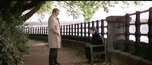
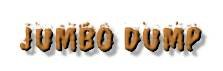

| Omen,
The (SE)/B+,B+ |
| Fox/1976/111/ANA
2.35 |
The
Omen is good storytelling. A number of visually jarring scenes are integral to the plot, but
this is no effects laden eye-popping trash, but storytelling. Perhaps there are some questionable
of character decisions, but the filmmakers deserve some latitude in serving up the supernatural. On
the whole, the filmmaking team keeps The Omen firmly grounded in reality.
An American Ambassador living in Rome faces a tough decision when his wife has
problems delivering their first child. Should he accept the advice of a priest and substitute a
motherless newborn for his own infant who did not make it through child birth? To compound matters,
the priest suggests not telling his wife. Ambassador Thorn makes the decision that shapes the
balance of The Omen. When Thorn gets the plum post of Ambassador to Great Britain,
suspicious events begin clouding the perfect family. Thorn must once again make the tough
decisions.
Adding to the line of David Seltzer's fine script is Jerry Goldsmith's music.
Jerry Goldsmith is truly a movie music smith, hammering out an arsenal of powerful scores over a
long career. The Omen is one of his most effective. It drives the film, whipping the pace
whenever there is a potential slowdown. Though I think the film may drag some in meting out
exposition, Donner is a good action director, and welds the pieces of The Omen together is
entertaining fashion. Photography is excellent, finding the right composition to emphasize the
other worldly aspects of day to day life.
 |
|
When the Jews return to Zion. ©Fox |
Gregory
Peck is an excellent choice to play a father as he proved in To
Kill a Mockingbird, but Peck is far too aware of the script to let any tenderness for the
boy show through through in his performance. I think a warmer performance by Peck would have
benefited the film. But Peck makes a great diplomat. Peck has a unique film presence. He can get
away with playing Mengele or even taking a knife to his young child. This is the first memorable
moment for Gregory Peck and ferocious dogs. I think the dogs of The Omen may have inspired
the nasty mutt confrontation in The Boys from Brazil . The dogs are nasty in various scenes. Personally, I will
never visit an out of the way foreign graveyard in the dead of night without at least carrying a
big stick.
Peck gets excellent support from a fragile Lee Remick as his wife and David
Warner as the photographer whose camera captures more than meets the naked eye. Smaller character
roles are filled with eerie acumen. Billie Whitelaw scared me thoroughly with her domineering
governess posture. No Mary Poppins here! And Patrick Troughton plays Father Brennan like a man
awash in a sea of fiery hell.
When you see Father Brennan ,who has already posed a threat to the
Ambassador, lingering near his home, you might wonder why Thorn continues on his way. Wouldn't you
be concerned for the well being of your family? Well, maybe his appointment was just too pressing.
At any rate, director Donner is on top of the situation. The pace of the film prevents you
from lingering on any doubtful details.
The transfer is quite good. Other than several soft scenes (May have been
the original film.) and some edge ringing in high transitions spots, the images are sharp and
pleasing. Every
666 is sharply focused., that's for certain. Color levels are consistent, though a tad less
than fully saturated. Straight lines and fine details are rock steady. Grain is held to a minimum
and transferred tightly. There’s only one jarring moment of jitter, a tracking shot of Peck
walking into his British mansion, and I almost thought there must have been a something on the
track to make it jump that way.
A short, 6 minute
section of the special edition, "Curse or Coincidence," has film principals relating some
of the bizarre horrors that surrounded the film, which resulted in a number of deaths and near
deaths. It’s a fitting macabre addition to The Omen, a eerie horror film that for the
most part stays on a path bordering the edges of reality. Composer Jerry Goldsmith talks about several of the set pieces in a filmed
interview. "The Omen Revealed," a 46 minute making of provides other insights into the
films from principals including writer David Seltzer, who talks
about researching the screenplay for three months before setting it to paper. He also points out
the London locale was picked by him because he figured it materialize as an entertaining trip for
him.
Donner and Editor Stuart Baird provide friendly observations about making The
Omen, and the actors in general. Donner keeps insisting he did not look at the film as a horror
film, but an action thriller. Give me a break Dick.
There comments make an excellent supplement to the pleasures of the special edition.
Baird remembers slowing the shots of the dog down because he didn't stay still enough. Donner's
good sense of humor shares the fun he is having watching the film with Baird looking back
after almost a quarter of a century. There's one point at which both Donner and Baird observe in
unison a scene that Stanley Kubrick stole for The Shining. I like details noted like a split
diopter used to hold focus that Donner mentions in one shot. It expands on your knowledge of the
process and the tools available to the filmmaker. Does Donner take a shot at producer Mace Neufeld
when he related the unfulfilled promise of two points profit participation or is it the director's
sense of humor at work? Stuart Baird coins a new name for a film editor: the Mohel, the rabbi who
performs ritual circumcisions at a bris.
|
|

The Feature Archive
has articles ranging from Akira
Kurosawa to Blonde Bimbos.
Movie Rage: Death in the Aisles
Everyone knows what it feels like to get angry at the
movies these days. Here's a humorous but not so delightful view of big screen misery.
Redeeming
the Writer:
A Conversation with Frank Darabont
 
DVDPlanet is the DVD
incarnation of legendary laser retailer Ken Crane's. Deep discounts and serious service.

Irreverent DVD views and links to many sites. The big
question is "Who is Uncle Herbie?"
 Mike DeLuca, New Line's head of production, is the cover
interview in the current issue. Check it out along with other savvy features of this
excellent book Mike DeLuca, New Line's head of production, is the cover
interview in the current issue. Check it out along with other savvy features of this
excellent book

The National Film Preservation Foundation (NFPF) is the nonprofit organization created by the U.S. Congress to save
America's film heritage.

Doug Pratt's been doing almost longer than anyone in the business, reviewing laser discs, that is,
and now DVDs too. The venerable Laserdisc Newsletter has been publishing since 1984. Pratt probably
has a large enough stock of laser discs in his house to build a DVD-proof bomb shelter. Check out
his on-line reviews at DVDlaser.com.
 ETEKNet is the web's only 24-hour, totally FREE source for all your home theater,
DVD, Dreamcast, PC, and Networking tech support needs! ETEKNet is the web's only 24-hour, totally FREE source for all your home theater,
DVD, Dreamcast, PC, and Networking tech support needs!

Fine reviews, features and news on DVD. The Big Picture
has been doing DVD as long as anyone. Jeff McNeal and Bob Banka feed on a steady diet of DVDs.
 . .
The
Movie Poster Archive includes extensive poster images from the films of stars like Susan Hayward,
Kirk Douglas, Katharine Hepburn and many more. Our featured star is Cary Grant.
|